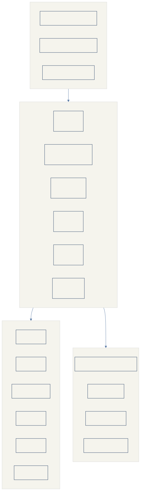

财务部 AI Coding 搭建的供应商结算对账系统处于半成品状态（约 10% 进度）。共创会完成需求对齐与源码侦察，9 份专业产出全量到齐，Align/Recon 阶段门控通过，进入 Architect 阶段。
第一阶段聚焦核心链路稳定性验证，通过后再推进后续模块；发票管理、付款管理、余额看板全部暂缓。
AI 对账暂缓——避免 AI 判断偏差导致多轮交互拖慢效率，新增供应商随增随配，待链路稳定后再评估 AI 提效。
我方账单走接口自动抓取，供应商账单走公共邮箱 / 后台 RPA 自动下载，零散账单保留人工上传兜底。
账单与发票匹配按供应商维度配置：优先一对一，支持按供应商固化多对一模式，架构层面禁止多对多匹配。
9 份专业产出，10 项高风险主张经独立代码锚定复核 10/10 属实、零失真；跨 Agent 互检纠正 1 处偏差。
活凭证随 code.zip 分发至全队，属 CRITICAL 级安全事件，无论项目走向都必须立即轮换并改为环境变量读取。
当前结算全链路散落在腾讯云、大象系统、飞书多维表格三类工具中，人工操作占比极高，对账时效慢且不稳定，实操同学已弃用线上对账回归手工比对。每条痛点均可追溯到共创会说话人与时间码。
结算全链路散在腾讯云、大象系统、飞书多维表格三类工具，无统一入口，各环节数据无关联。
影响：结算同学需在多系统间切换，数据无法追溯串联，无法形成完整对账闭环；数据分散导致核对遗漏风险高。
账单手工搬运、手工对账、发票手工签收、回票表手工填、付款单手工提；周结/半周结供应商月度提单量极大。
影响：人力消耗大、效率低、易出错；周结/半周结算量大导致月末峰值压力，错误率随人工疲劳上升。
上传后次日才出结果，偶发漏传、对账不准、跑不出来。
影响：时效不满足结算节奏（次日才出结果影响月末关账）；对账不准需二次人工复核，反而增加工作量。
因腾讯云体验差，结算同学回归线下手工比对。
影响：已有线上对账被弃用——这是「采纳度风险」：新系统若不能证明结果可信，将面临第二次弃用（大概率不可逆）。重新赢回信任的窗口只有一次。
未与多维表格对接，结果靠人工复制留存。
影响：对账结果不可持久化、不可追溯；人工复制易丢失/错漏；无法沉淀为历史数据供后续分析。
差异类型全靠人工判断打标，跨期/跨单对平无自动逻辑。
影响：差异处理依赖个人经验，无标准化流程；跨期/跨单对平靠人脑记忆，遗漏风险高；处理动作无留痕无法审计。
签收需登录大象系统手工操作，回票表手工填，发票与对应账单无匹配。
影响：发票与账单无法对应核对；手工签收回票表工作量大；大象系统与对账系统割裂。
需从结算表导出数据，再到分贝通对公付款端手工提单。
影响：付款环节手工操作易出错（金额/收款方错填）；结算→付款链路断裂，无法端到端追溯。
新系统供应商主数据从大表手动导入，未打通同步机制。
影响：供应商信息维护成本高；大表与系统数据不一致（300+ vs 700+ 口径差异）；新增供应商需手动同步，易遗漏。
第一阶段只跑通「账单上传 → 自动对账 → 差异池」，P1/P2 模块待核心链路稳定后依次启动。会议明确五条硬约束，作为 Architect 阶段 Spec 的强制输入，不得突破。
先以端到端全流程总览呈现从账单归集、自动对账、开票匹配、提对公付款到最终打款的完整业务闭环及各环节当前实现状态；再基于 reconciliation.service.ts / difference-pool.service.ts 源码实际调用链，拆解对账环节的内部流转：从供应商配置规则出发，经过账单上传解析、字段映射、自动对账四分类、差异池生成与对冲检测、人工差异处理，最终完成审核与锁定。


auditReconciliation 拒绝时 status 设为 draft 而非 reconciled——审核不通过对账状态直接退回草稿，等于整轮对账状态被清零。承宇纠正、玉衡锚定确认。
拒绝时回退到 reconciled 状态（保留对账结果，仅退回审核前状态）。属纯 bugfix，已批准立即动手修复。
两端 orderSn 金额完全相等（含金额容差默认 0.01），清除差异标记，直接进入 confirmed 通道。
我方账单金额大于供应商端，进入差异池待处理。
我方账单金额小于供应商端，进入差异池待处理。
仅一端存在该 orderSn，另一方无对应记录，进入差异池待处理。
同一 orderSn 出现在不同对账周期，前后期净差异 = 0 → 系统自动标记 cross_period_offset 闭环，无需人工干预。
不同 orderSn 但人工判定可对平 → 人工设置关联订单号 → 系统检测两单净差异 = 0 → 标记 cross_order_offset 闭环；支持取消关联。
D + 年月日 + 当日序号，格式 D{yy}{mm}{dd}{seq}。⚠️ 当前用 SELECT COUNT + UPDATE 实现，并发会重号，需改用 PG sequence。
基于 Lark APAAS fullstack-nestjs 模板搭建，前端 React 19 + 后端 NestJS 10 + PostgreSQL 技术栈。前端层 6 个主要组件、后端层 6 个核心 Service、8 个暂缓模块、基础设施层含飞书 APAAS 平台与 6 个外部集成点。模块完成度状态详见下方文字说明。

| 模块 | 状态 | 当前实现 | 暂缓原因 |
|---|---|---|---|
| 发票管理 | CRUD 雏形 | 有 CRUD + 状态管理，无账单-发票匹配逻辑 | P1 · 待核心链路稳定 |
| 付款管理 | CRUD 雏形 | 有 CRUD + 审核流程，未打通分贝通对公付款 | P1 · 待核心链路稳定 |
| 银行流水 | 仅导入 | 仅 importStatements 批量导入，无对账逻辑 | P2 · 后续专项 |
| 余额管理 | 几乎空白 | 仅一个 GET /api/balance 端点 | P2 · 另开专项会 |
| 返利管理 | CRUD 雏形 | 有 CRUD + 与对账单关联 | P2 · 后续 |
| AI 对账 | 已实现暂缓 | ai-text-to-json 插件，格式化账单 → AI 差异识别 → 回写 | 会议决定暂缓 · 先人工初始化 200+ 规则 |
| 看板 | 有雏形 | metrics / amount-trend / todos 三个端点 | 业务看板 · 非运维监控 |
| 飞书集成 | 仅文档导出 | 硬编码 App ID/Secret，仅 exportDocsToFeishu | 唯一外部集成点 · 凭证泄露安全风险 |
基于源码全量审读与独立代码锚定复核，对 P0 核心链路 5 个模块逐一拆解已实现能力与缺口。对账引擎与差异池核心逻辑已完成，账单上传与规则配置模块存在较多待完善项。
基于源码全量审读与独立代码锚定复核，识别出 12 项技术风险（含 1 项 CRITICAL 安全事件）。每条风险均附代码位置、严重度、影响分析与修复方向，代码位置经玉衡回源码逐一验证属实。
直接写死 FEISHU_APP_ID 与 FEISHU_APP_SECRET 明文，活凭证随 code.zip 分发到整个小队。.env 文件亦在 zip 内，.gitignore 仅忽略 .env.local。财务系统凭证泄露风险极高。
修复方向：立即在飞书开发者后台轮换该 Secret；改为从 process.env 读取；.gitignore 忽略 .env
uploadBills 的 DELETE 旧数据 + INSERT 新数据全是独立 await this.db，零 .transaction()。上传中断或异常导致旧数据已删、新数据未写入，数据丢失。
修复方向：将 DELETE + INSERT 包裹在 db.transaction() 中。属纯 bugfix，已批准立即动手。
对账计算中断导致数据不一致（部分差异已标记、部分未标记），状态与汇总额可能不一致。仅 difference-pool 的 recalculateDifferenceStatuses 用了事务。
修复方向：多步 UPDATE 包裹事务。属纯 bugfix，已批准立即动手。
status: data.passed ? 'confirmed' : 'draft'——审核不通过对账状态直接退回草稿，markReconciliationDifferences 设的 reconciled 状态丢失，等于整轮对账状态被清零。经纬原述「仅记录不回退」不准确，承宇纠正为「回退过头」，玉衡坐实。
修复方向：拒绝时回退到 reconciled 而非 draft。属纯 bugfix，已批准立即动手。
两处 userId 仅出现在 this.logger.log(...)，零 DB 写入；无 difference_action_log 表。谁在什么时候标记/处理了什么差异，数据库零记录。会议要求「差异处理第一层留痕」P0 完全未实现。
修复方向：新增差异状态变更历史表（itemId / userId / action / oldValue / newValue / remark / createdAt），表结构需等 Architect Spec，勿自行脑补。
承担上传/对账/差异/审核/锁定/查询全部职责，修改一处可能影响不相关功能；维护风险高；多 Agent 并行修改易产生合并冲突。
修复方向：拆分为 UploadService / ReconcileEngine / DifferenceService / AuditService 四个独立 Service。Architect 阶段执行。
核心对账逻辑无回归保障，「验证稳定性」无锚可依；修复后无回归验证手段。
修复方向：P0 放行门槛纳入——关键路径端到端测试、四分类单元测试、差异编号并发安全测试。
账单金额、供应商名称、银行账户号等敏感财务数据进入 stdout 日志。仅 console.log 级输出，无结构化日志、无脱敏、无日志留存策略。
修复方向：生产环境关闭 body 日志，或加字段级脱敏中间件。属安全基线先行项。
API 路由本身无服务端 Guard 保护，若平台鉴权被绕过或配置不当则裸奔；DTO 仅显式 @UsePipes 时校验，全局不生效。
修复方向：P0 至少补全局 ValidationPipe + CORS 白名单 + Helmet。属安全基线先行项。
SELECT sn LIKE datePrefix% → seq = existing.length → 逐条 UPDATE，无锁无事务无 PG sequence。并发上传两个供应商的账单会生成重复差异编号（同日并发场景）。
修复方向：改用 PG sequence 或 SELECT ... FOR UPDATE。属纯 bugfix，已批准立即动手。
若先传公司端、后传供应商端（分两次调用，现实场景因供应商账单滞后），第二次会把第一次的公司端数据删掉。
修复方向：覆盖改为按 source 分片覆盖。属纯 bugfix，已批准立即动手。
字段映射/规则配置错误仅运行时暴露，配错静默产出错误差异（200+ 供应商批量配置时风险放大）；新增供应商格式需改代码重新部署。
修复方向：JSONB 加 schema 定义 + 主动校验（字段映射存在性 / 金额可解析 / 状态白名单非空）；解析规则提取为可配置规则。
五份核心产出经独立代码锚定复核，10 项高风险主张全部属实、零失真。三项反指标当前全在最差值，已纳入 P0 验收门槛强制项。P0 放行设四道质量门槛 + 四项运维 SLO 作为「稳定」的可验收依据。
先挑 5–10 家高频周结供应商，系统差异池结果与实操同学线下对账结果并行核验一轮再放量。
依据：结算同学曾因腾讯云体验差弃用线上对账，新系统重新赢回信任的窗口只有一次。若首次跑出的差异池与实操线下结果对不上，就是第二次弃用，大概率不可逆。优先级高于 bugfix。
从 Align/Recon 已完成到 P2 专项深化，共五个阶段。当前处于 Architect 阶段待启动，4 组待决策项已完成门控裁决。先行修复（5 项 bugfix + 安全基线）已批准立即动手，不依赖外部样例。
按会议结论与门控裁决整理的 12 项待办清单。原素材中涉及「景韶春」的待办实际责任人均为刘卿志（因会议显示有误），已在本报告中统一更正。
| 编号 | 待办事项 | 责任人 | 依赖 / 阻塞 | 状态 |
|---|---|---|---|---|
| T1 |
凭证轮换（飞书后台轮换 Secret + 改 process.env + 清理 zip 内 .env）
飞书 App Secret 硬编码泄露属 CRITICAL 级安全事件，无论项目走向都必须轮换
|
安澜 | 无 | 🔴 待执行（今日闭环） |
| T2 |
5 项纯 bugfix（事务 ×2 / 审核回退 / 编号竞态 / 覆盖分片）
不依赖外部样例的纯逻辑修复，玉衡拆分批准，承宇先行执行
|
承宇 | 无 | 🟡 已批准先行 |
| T3 |
安全 / 部署基线 6 项
凭证环境变量化 + 日志策略 + ValidationPipe/CORS/Helmet + 部署文档 + 迁移管理 + 健康监控方案
|
安澜 | 无 | 🟡 已批准先行 |
| T4 |
批量初始化模板字段结构草案
基于现有 companyBillConfig / supplierBillConfig，仅字段映射草案、不含校验规则、标注草案
|
清渠 | 无（仅映射草案） | 🟡 已批准先行 |
| T5 |
implementation-solutions.md 提取上云盘 + 版本化
修复根因知识仅存客户 zip 内单一 md，需提取版本化（呼应验收产物三必须）
|
传薪 | 无 | 🟡 已批准 · P0 前置 |
| T6 |
Architect Spec v1.0 产出
12 项强制纳入项 + 红蓝对抗 + Spec 产出后北辰 Approve 门控
|
经纬 | 北辰拍板 + 红蓝对抗 | ⏳ 待启动 |
| T7 |
供应商数量口径盘点（大表 300+ vs 导入 700+）
活跃数 vs 历史全量口径确认，拿到大表后清渠协同盘
|
观澜 + 清渠 | 需大表 | 🟡 起草中 |
| T8 |
成功指标量化阈值
对账准确率 / 时效 SLA / 规则覆盖率等可验收量化指标，需结算团队确认
|
观澜 | 需结算团队确认 | ⏳ 外部依赖 |
| T9 |
资料对接：供应商账单样例 + 系统访问信息
提供可代表通用情况的供应商账单、己方账单样例及系统访问信息，供开发团队核验功能逻辑与匹配规则
|
刘卿志 | 阻塞项 · 无 SLA | 🔴 R02 · 待交付 |
| T10 |
流程图绘制 + AI 提效点识别
会后查看系统 → 绘制供应商结算全流程标准流程图 → 逐一识别可由 AI 智能体提效的节点 → 与张艺团队开短会确认
|
刘卿志 | 阻塞 T9/T10/T11 | 🔴 R02 · 待启动 |
| T11 |
账单解析规则可配置化
需样例验证格式多样性，将供应商数据行识别规则从硬编码提取为可配置规则
|
承宇 | 阻塞于 R02（需账单样例） | 🔴 阻塞于 R02 |
| T12 |
差异 → 应结算金额勾稽公式
差异标签 → 应结算金额加减规则，需拿实操同学的真实差异案例对齐
|
清渠 | 阻塞于 R02（需真实差异案例） | 🔴 阻塞于 R02 |
Align/Recon 阶段门控通过，阶段关闭。9 项待决策项已完成裁决，各角色 Architect 阶段分工已派发。5 项风险已登记，6 份报告关键异议已汇总记录。
五份核心产出 + 三份侧线产出 + 一份运营基线共九份材料全量到齐。玉衡独立代码锚定复核 10/10 属实、零失真零夸大；跨 Agent 互检纠出实质错误 1 处（经纬「审核拒绝不回退」→ 承宇纠正为「回退过头到 draft」→ 玉衡坐实），互检机制有效运转。阶段门控通过，进入 Architect 阶段。
立即执行，今日闭环。活凭证随 zip 泄露，无论项目走向都必须轮换。
全部先行（安全 3 项 + 部署文档 / 迁移管理 / 健康监控方案）。审计日志基础设施设计等 Spec。
按玉衡拆分批准：5 项纯 bugfix 先行；审计留痕表涉新表设计等 Spec，勿自行脑补。
字段结构草案可先行（仅映射草案、不含校验规则、标注草案）；校验规则并入 Spec。
纳入 Architect 红蓝对抗议程，清渠作红方准备立论（收益、风险可控边界、人工兜底）。
纳入 Spec 强制项，作为 P0 放行门控的量化依据（玉衡 3 项质量门槛 + 安澜 4 项 SLO）。
纳入 P0 验收门槛设计，Spec 引用（持久化 + 版本管理 + 非编写方独立复核）。
批准，P0 前置。implementation-solutions.md 提取上云盘 + 版本化管理（呼应三必须）。
采纳。P0 验收门槛加入 5–10 家高频周结供应商系统差异池 vs 实操线下并行核验一轮再放量。
承宇修业务逻辑层（service）；安澜修中间件/凭证/日志——两线文件不重叠，避免合并冲突。
| ID | 风险 | 概率 | 影响 | 状态 |
|---|---|---|---|---|
| R01 | 飞书 App Secret 活凭证随 zip 泄露，轮换决策未落地 | 高 | 高 | 🔴 待执行 · 今日闭环 |
| R02 | 外部资料无截止时间，阻塞清渠/承宇/观澜后续工作流 | 高 | 高 | 🔴 无 SLA · 需定回传日期 |
| R03 | 「验证稳定性」无量化基线，P0 → P1 放行凭感觉 | 中 | 高 | 🟡 待 Architect 闭环 |
| R04 | 供应商主数据口径不一致（大表 300+ vs 导入 700+） | 中 | 中 | 🟡 待闭环 |
| R05 | 修复根因知识仅存客户 zip 内单一 md，无版本管理 | 低 | 高 | 🟡 传薪已提方案 |
AI 辅助规则配置不应缓。AI 不参与对账决策暂缓无异议；但 AI 辅助规则配置（用样例账单反向推断字段映射、生成规则草稿、人只做确认）可显著压缩 30–50 小时人工配置，风险可控（错了有人工兜底，不进生产对账）。纳入红蓝对抗议程。
200+ 供应商规则初始化瓶颈不在「配置」而在「验证」。即使人工逐个配，配错了也是静默产出错误差异——批量初始化的前置条件不是 AI 辅助，而是校验机制。建议 P0 先做配置校验，再谈批量工具或 AI 辅助。
「验证稳定性」未定义可验收基线。没有 SLA 指标（核心链路 P99 响应时间、对账成功率、上传失败率、数据一致性校验通过率）就无法判断何时算「稳定」、何时可推 P1。建议 P0 同步定义 3–5 项可量化运维 SLO。
承宇/清渠可先行清单中 2 项涉新设计的应等 Spec。审计留痕表、批量校验规则这两项在无 Spec 下各自脑补表结构 = 必返工，且多 Agent 并行脑补会产生结构冲突。4 项纯 bugfix 可先行。已按拆分批准。
修复知识只存活在一份 zip 里，zip 丢失即灭失。implementation-solutions.md 是这套系统唯一的根因记录，在客户 zip 里、无版本管理、未与知识库关联。建议 P0 启动时提取上云盘 + 版本化。已批准。
被弃用过一次的系统重新赢回信任窗口只有一次。如果 P0 验收门槛只测代码缺陷清零不测真实场景输出可信度，首次跑出的差异池与线下对不上就是第二次弃用。建议加入灰度验证窗口。已采纳。